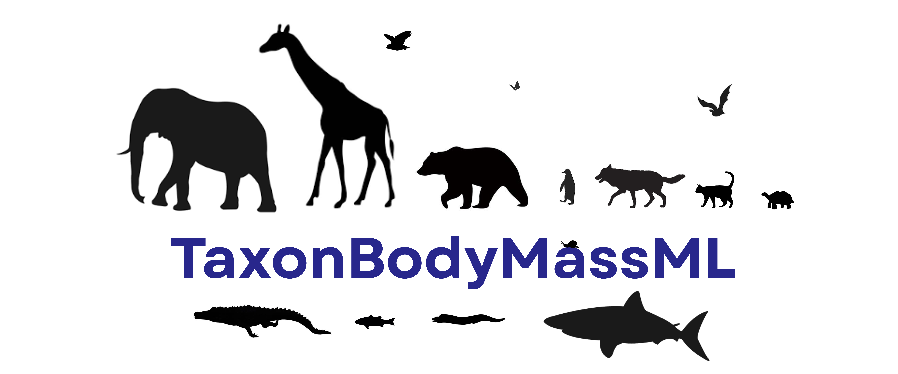
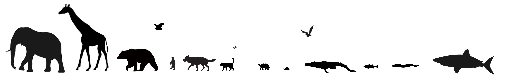

Welcome to the TaxonBodyMassML Website!
To predict a species mass, input the name and press go! For additional help, access the 'Help' page from the upper righthand corner.

First, you will select whether you are inputting a single species, or a list of species. If you are inputting just one species, you will click the 'Single' button below the input bar. If this option is selected, it will turn blue. (It is selected by default!)
If you are inputting a list of species names, you will instead select the 'List' button under the input bar. If this option is selected, it will turn blue.
After clicking the 'List' button, you have an option to convert your output to a CSV file deliverable. If you would like to opt in to this feature, you will click the checkbox. (If your list contains more than 5 species, this conversion will be done automatically.)
At this point, you will go ahead and enter the name or list of names (each species separated by a comma) in the input bar where it says "Input species name(s)". In this tutorial, we will input just one species.
After you are satisfied with your input, you will simply select the "Go!" button located underneath the "Single" and "List" buttons.
After clicking "Go!", your output will generate in a new modal on the right half of the screen. The generation may take a moment, but if you have entered a valid species name, the mass will be displayed.
If you need to change your input, or you want to get the mass for a different species, you will change the input you typed originally by simply altering the text in the input bar.
After you are ready, you will then click the "Go Again!" button for your new output. (You are also welcome to change your selection from "Single" to "List", or vice versa.)
To view all of the masses you have generated, you will click the "Session History" button under the output.
If you want to learn more about how your output was generated, you will click the "Learn More" button under the output.
If you are interested in learning more about the data used to make this website, you will click the "Data" tab in the navigation bar at the top of the screen.
If you are interested in learning more about our process, algorithm, or sources, you will investigate the "More Information" tab in the navigation bar at the top of the screen.
And finally, if you need more help beyond the scope of this tutorial, or if you have a question to ask us, you will click the "Help" button in the navigation bar at the top of the screen.
Session History
Explanation Modal
